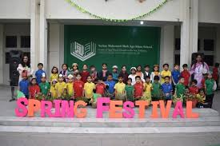

SULTAN MOHAMMED SHAH AGA KHAN SCHOOL
|
| Teachers willing to help! |
|
|
| Beautiful clothes! |
|
|
| Extracurricular activities! |
|

|
|
The Aga Khan Education Service (AKES) was created by Sir Sultan Mahomed Shah Aga Khan, the current Aga Khan's predecessor and grandfather.
Aga Khan Schools were first established as early as 1905.
These included a handful of community-based literacy classes in remote rural areas of South East Asia which were strikingly progressive for their time.
They put emphasis on accessibility for all communities regardless of socioeconomic status, teaching both girls and boys, and stressing the importance of equitable early childhood education.